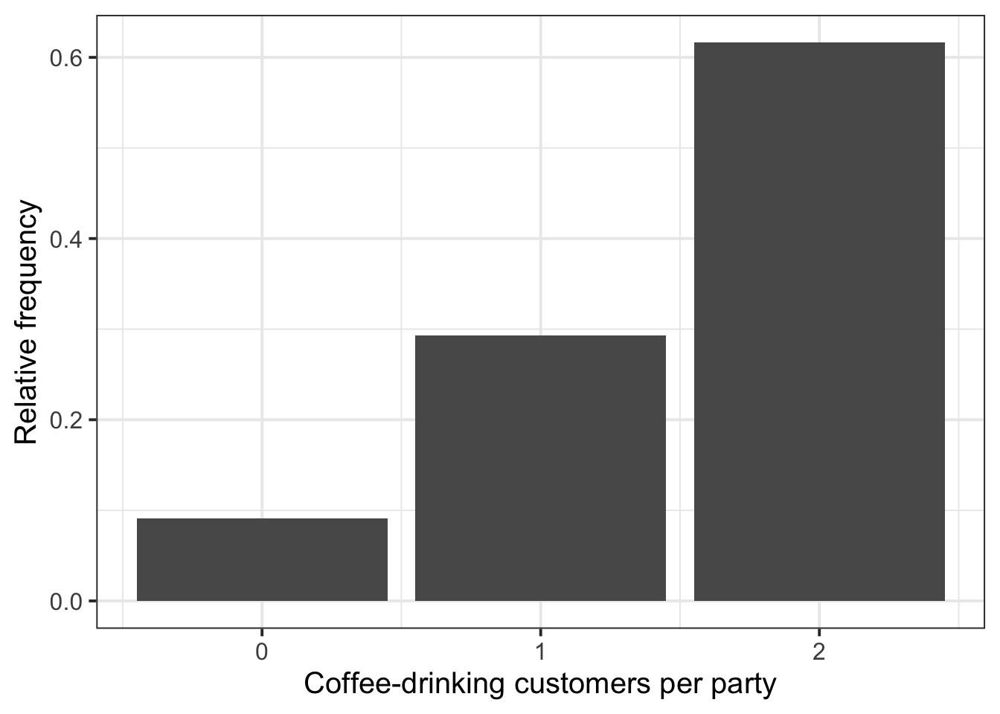
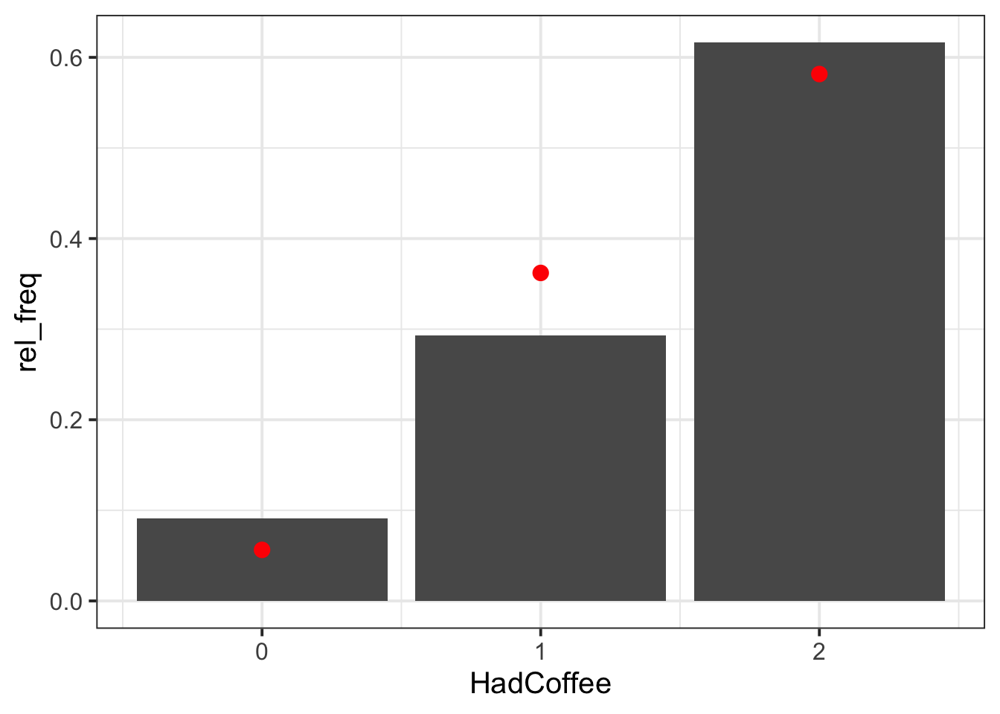
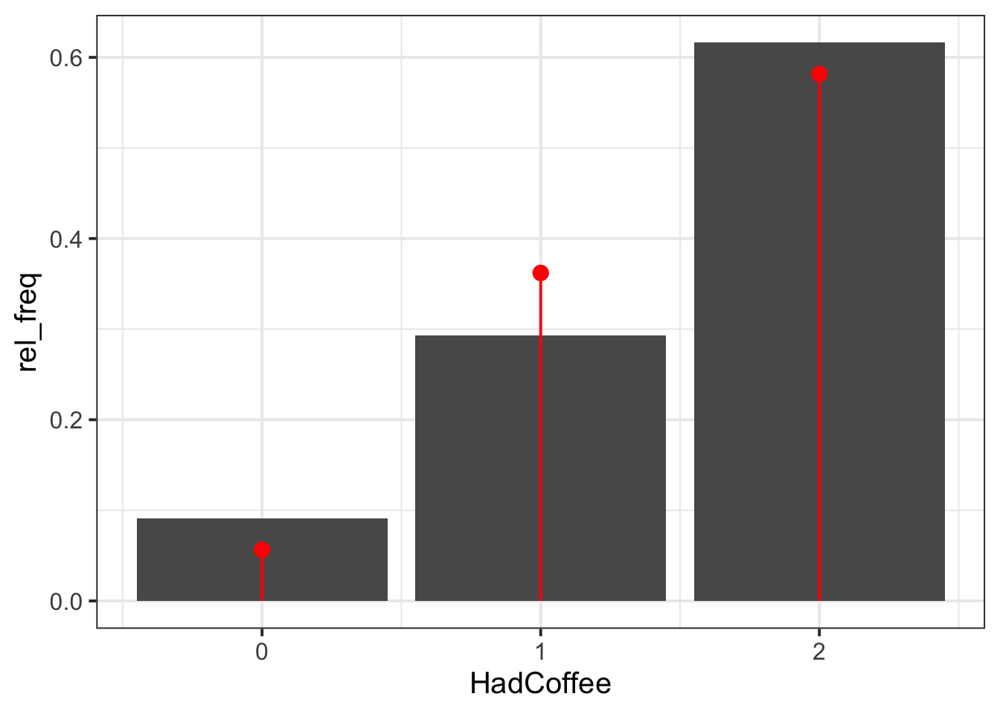

| Variable Name | Description |
|---|---|
| Bill | Size of the bill (in dollars) |
| Tip | Size of the tip (in dollars) |
| Credit | Paid with a credit card? n or y |
| Guests | Number of people in the group |
| Day | Day of the week: m=Monday, t=Tuesday, w=Wednesday, th=Thursday, or f=Friday |
| Server | Code for specific waiter/waitress: A, B, or C |
| PctTip | Tip as a percentage of the bill |
| HadCoffee | Number of guests in the group who had coffee |
| IQ1 | Score on IQ test for guest 1 |
| IQ2 | Score on IQ test for guest 2 |
Random Variables (Discrete)
Semester 1 - Week 9
1 Formative Report B
Instructions and data were released in week 7.
Names of operators
-
<-is called the assignment operator-
object_name <- what_to_storemeans: assignwhat_to_storeintoobject_name
-
-
|>or%>%is the pipe operator or pipe- take what’s on the left and then do something to it
1.1 This week’s task
Task B3
B3) Computing and plotting probabilities with a binomial distribution.
Sub-steps
Below there are sub-steps you need to consider to complete this week’s task.
Tip
To see the hints, hover your cursor on the superscript numbers.
Context
A new movie theatre is opening in Texas, and the management team are reviewing the requirements for snack stalls and their car parking capacity. They are interested in determining whether to have only one or multiple snack stalls selling popular food and drink items; and are considering whether to expand their car park size or introduce a bus stop on cinema grounds.
In this lab, you will need to consider both the Snacks and PrivateTransport variables from the Hollywood movies dataset when answering the questions below.
- Reopen last week’s Rmd file, and continue building on last week’s work. Make sure you are still using the movies dataset filtered to only include the top 3 genres.1
Today, focus on the
SnacksandPrivateTransportvariables. Read the data description table in week 7 to remind yourself what those variables represent.Are the
SnacksandPrivateTransportvariables discrete or continuous? What are the lowest and highest possible values that the two random variables could take?2
- Create two barplots showing the sample relative frequency distribution of the
Snacksand thePrivateTransportvariables.3
- What distribution do the
SnacksandPrivateTransportvariables follow? Estimate the parameters of the two distributions from the sample data.4
- Plot the fitted Binomial distribution on top of the sample relative frequency distribution for each variable. Is the Binomial distribution a good model for each variable?5
In R, 0:50 gives you the sequence of whole numbers from 0 to 50, i.e. 0, 1, 2, …, 49, 50.
The code start:stop in R is short syntax to create a sequence of values going from start to stop in steps of 1.
- Thinking question: Why did we ask you earlier to plot the sample relative frequency rather than the frequency? How would a plot showing the Binomial probabilities on top of the sample frequencies look like?6
- What is the probability that more than half of the audience for each movie (i.e., >25 viewers) bought snacks? What is the probability that less than half of the audience for each movie (i.e., <25 viewers) traveled via private transportation?7
Based on the probabilities you have reported above, do you think that the new movie theatre should (1) invest in multiple snack stations, or just one; and (2) increase car parking capacity or add a bus stop? Justify your answer.
A recent survey by customer research firm SurveyMe found that 49% of movie viewers always buy some form of snack item (i.e., popcorn, drinks, sweets) when watching a movie, and another suggested that 70% of movie viewers travel to the cinema via private transport. Are your two probability estimates consistent with the survey-reported values?8
- In the analysis section of your report, write up a summary of what you have reported above, using proper rounding to 2 decimal places and avoiding any reference to R code or functions.
2 Worked example
The dataset available at https://uoepsy.github.io/data/RestaurantTips2.csv was collected by the owner of a US bistro, and contains 99 observations on 10 variables. It is a subset of the RestaurantTips.csv data presented in the past weeks, focusing only on parties of 2 people.9
The bistro owner is interested in coffee sales, and whether they should consider introducing a 2 for 1 coffee deal to entice customers to purchase one of their Christmas coffees. Another option they are considering is starting a loyalty scheme for customers to be rewarded for every coffee purchase. Your job is to advise them on which scheme they should run to benefit most customers.
For context, Americans drink a lot of coffee, but slightly less than Norwegians (89.4% of Norwegians drink at least one coffee per day!10). We are interested in estimating the probability that an adult American will drink coffee.
First, let’s read the new dataset into R:
library(tidyverse)
tips2 <- read_csv("https://uoepsy.github.io/data/RestaurantTips2.csv")
head(tips2)# A tibble: 6 × 10
Bill Tip Credit Guests Day Server PctTip HadCoffee IQ1 IQ2
<dbl> <dbl> <chr> <dbl> <chr> <chr> <dbl> <dbl> <dbl> <dbl>
1 23.7 10 n 2 f A 42.2 2 93 100
2 32.0 5.01 y 2 f A 15.7 2 96 98
3 17.4 3.61 y 2 f B 20.8 2 94 99
4 15.4 3 n 2 f B 19.5 2 99 108
5 18.6 2.5 n 2 f A 13.4 2 129 106
6 21.6 3.44 n 2 f B 16 2 82 118As mentioned in the data description, the variable HadCoffee records how many, out of the 2 people in each party, had coffee. Clearly this can only take the values 0, 1, or 2 if none, only one, or both of the people in the party ordered coffee.
- If we were asked to describe what kind of variable
HadCoffeeis, and to comment on the kind of probability distribution it may follow, we could say:
The number of coffee-consuming guests out of parties of size 2 is a discrete random variable that could be modeled by a Binomial probability distribution.
- We can plot the frequency distribution of the
HadCoffeevariable in the sample as following:
Compute the sample frequency distribution, showing the absolute frequencies (counts) and relative frequencies (proportions):
# freq_distr data contains the sample frequencies
freq_distr <- tips2 |>
count(HadCoffee) |>
mutate(rel_freq = n / sum(n))
freq_distr# A tibble: 3 × 3
HadCoffee n rel_freq
<dbl> <int> <dbl>
1 0 9 0.0909
2 1 29 0.293
3 2 61 0.616 Plot the frequency distribution of the discrete variable HadCoffee using a barplot. As we already have the x values (HadCoffee) and the y values (the height of the bars, rel_freq), we use geom_col().
geom_col() is used to create a barplot when you have already computed the bar heights, i.e. the frequency table. This draws columns at x of height given by y as specified inside aes(x = ?, y = ?)geom_bar() takes the original data, and does the counting for you. Because of this, it only requires you to specify x into aes(x = ?). The height is computed for you internally by counting the unique values in x.
ggplot(freq_distr, aes(x = HadCoffee, y = rel_freq)) +
geom_col() +
labs(x = "Coffee-drinking customers per party",
y = "Relative frequency")
Fitting a distribution
Fitting a Binomial distribution to data involves estimating the parameters of the distribution from the data. In other words, we want to find values for \(n\) and \(p\) from the variable HadCoffee in the our data.
-
We can now fit a Binomial distribution to the variable. To do so, we need to start by estimating the parameters of the Binomial distribution:
- \(n\), the number of trials (or size)
- \(p\), the probability of success
For this dataset, \(n\) represents the size of each party, i.e. \(n = 2\). The discrete variable HadCoffee represents how many guests had coffee, out of the 2 possible guests per party.
In a Binomial distribution, the number of trials (\(n\)) should not be confused with the sample size. The sample size would be the total number of parties in the dataset, i.e. 99. It’s just unfortunate that both use the same symbol \(n\), but which one is the correct one should be clear from the context.
The event “had coffee” represents our “success”, and \(p\) denotes the probability of success. In other words, \(p\) represents the probability of an individual having coffee.
Estimating the probability of success
The expected value \(E(X)\) of a Binomial distribution (i.e., the mean) is \(E(X) = n * p\) where \(n\) = size = number of trials, and \(p\) is the probability of success.
From this, we have that \(p = E(X) / n\).
We typically denote the estimated probability of success from the sample data with a hat on top, \(\hat{p}\), written in text as $\hat{p}$.
# The mean of the discrete random variable
EX <- mean(tips2$HadCoffee)
# Each party size (n in the formula)
size <- 2
# Estimated probability of having coffee: E(X) / n
p_hat <- EX / size
#check value
p_hat[1] 0.7626263- We can then compare the sample frequency distribution to the Binomial distribution, and comment on whether the Binomial fit is good:
We can create a new tibble having two columns. The first has the possible values of the Binomial distribution (0, 1, or 2 guests ordering coffee out of the 2). The second column has the theoretical probabilities, for each of the possible values, predicted by the Binomial distribution with parameters \(n = 2\) and \(p = 0.76\).
# binom_distr data contains the binomial probabilities
binom_distr <- tibble(
HadCoffee = 0:2,
binom_prob = dbinom(x = HadCoffee, size = 2, prob = p_hat)
)
binom_distr# A tibble: 3 × 2
HadCoffee binom_prob
<int> <dbl>
1 0 0.0563
2 1 0.362
3 2 0.582 We can plot the sample frequency distribution as a bar plot and put on top the fitted Binomial probability distribution as dots (see Option 1), and even add segments to show the Binomial distribution (see Option 2).
In both cases, you need to specify different data for each geom_. The bars will use the sample frequency distribution computed using count() before. The points will use the Binomial probabilities computed using dbinom().
ggplot() +
geom_col(data = freq_distr, aes(x = HadCoffee, y = rel_freq)) + # uses freq_distr data
geom_point(data = binom_distr, # uses binom_distr data
aes(x = HadCoffee, y = binom_prob),
colour = 'red', size = 3)
ggplot() +
geom_col(data = freq_distr, aes(x = HadCoffee, y = rel_freq)) +
geom_point(data = binom_distr,
aes(x = HadCoffee, y = binom_prob), # adds points
colour = 'red', size = 3) +
geom_segment(data = binom_distr,
aes(x = HadCoffee, y = binom_prob, # adds line (optional)
xend = HadCoffee, yend = 0), # from (x,y) to (xend,yend)
colour = 'red')

The Binomial distribution seems to be a good fit for the sample distribution, as the probabilities tend to agree. Among all parties of two guests, the highest probability is that both guests had coffee, and no one having coffee has the lowest probability.
Probability Mass Function
-
\(P(X = x)\) =
dbinom(x, size, prob)
The probability mass function computes \(P(X = x)\) for a Binomial distribution where number of trials is size and probability of success is prob.
- To calculate the probability that 1 person in the party orders coffee, we can compute the following:
The probability P(X = 1) for a Binomial with \(x = 1\), \(size = 2\), and \(p = 0.76\) is:
dbinom(1, size = 2, prob = p_hat)[1] 0.3620549- To calculate the probability that 2 people in the party order coffee, we can compute the following:
The probability P(X = 2) for a Binomial with \(x = 2\), \(size = 2\), and \(p = 0.76\) is:
dbinom(2, size = 2, prob = p_hat)[1] 0.5815988
Cumulative Distribution Function
-
\(P(X \leq q)\) =
pbinom(q, size, prob)
The cumulative distribution function \(P(X \leq q)\) gives the probability of having less than or equal to \(q\) successes.
From the total probability rule, the probability of a value being greater than \(q\) is computed as \(P(X > q) = 1 - P(X \leq q)\):
# option 1: P(X > q) = 1 - P(X <= q)
1 - pbinom(q, size, prob)# option 2: P(X > q) directly
pbinom(q, size, prob, lower.tail = FALSE)- To calculate the probability that 1 person or less orders coffee, we can compute the following:
We do this with the pbinom(q, size, prob) function, with q = 1 to have \(P(X \leq 1) = P(X = 0) + P(X = 1)\):
pbinom(1, size = 2, prob = p_hat)[1] 0.4184012You can also see this by creating a new column in the binomial distribution which has the cumulative sums of the probabilities, i.e. the values P(X = 0), followed by P(X = 0) + P(X = 1), and finally by P(X = 0) + P(X = 1) + P(X = 2):
# A tibble: 3 × 3
HadCoffee binom_prob cumul_prob
<int> <dbl> <dbl>
1 0 0.0563 0.0563
2 1 0.362 0.418
3 2 0.582 1 As you can see, P(X = 0) + P(X = 1) is 0.42 in the second row, which agrees with the result computed using pbinom above.
- To calculate the probability that at least one person from the group orders coffee, we can compute one of the below four equivalent calculations:
1 - pbinom(0, size = 2, prob = p_hat)[1] 0.9436537pbinom(0, size = 2, prob = p_hat, lower.tail = FALSE)[1] 0.9436537# 1 - P(X = 0)
# As the total probability is 1, we can get it as 1 - P(0 guests have coffee).
# This follows from the total probability rule
1 - dbinom(0, size = 2, prob = p_hat)[1] 0.9436537- To check whether our estimated probability of drinking coffee consistent with the one reported by a recent YouGov survey, which reported that three quarters of adult Americans drink coffee, we can take a look at our estimated \(\hat{p}\). We can also then comment on whether adult Americans are more or less likely to drink coffee than Norwegians?
# YouGov reported probability
p_survey <- 3/4
p_survey[1] 0.75# Our estimate
p_hat[1] 0.7626263The estimated probability of drinking coffee, based on the data from a US bistro, is 0.76. This is relatively close to the YouGov reported result of 0.75. The small deviation may be due to sampling variability, due to having chosen a different sample of people from the one that were considered in this bistro.
According to a recent survey, 89.4% of Norwegians drink at least one coffee per day11 As such, while adult Americans drink lots of coffee, an adult American is less likely to drink coffee than a Norwegian.
Example writeup
Figure 1 displays the distribution of coffee-drinking customers in two-party tables, with a Binomial fit superimposed as red dots. Both party guests are more likely to both drink coffee (0.58) than not (0.06). The probability of only one guest drinking coffee is 0.36. As such, the probability of at least one guest drinking coffee is 0.94. The owner of the bistro should not consider running a 2 for 1 offer on Christmas coffees, as they would lose out on income. It is most likely that groups of two customers will already buy two coffees when they visit the bistro (0.58). Instead, the owner might want to offer a loyalty scheme to reward customers for purchasing coffees, regardless of the quantity, as this will also reward parties of two where only one person purchases a coffee.
3 Student Glossary
To conclude the lab, add the new functions to the glossary of R functions.
| Function | Use and package |
|---|---|
rename() |
Changes column names in a data frame (tidyverse). Example usage: DATA |> rename(NEW_COL_NAME = CURRENT_COL_NAME)
|
dbinom() |
Calculates probability mass function values P(X = x) for binomial distributions (base R) |
pbinom() |
Calculates cumulative probabilities \(P(X \leq x)\) for binomial distributions (base R) |
geom_col() |
Creates bar plots where heights represent values in the data rather than counts (ggplot2) |
geom_point() |
Adds points to a plot. Used for scatter plots as well as for adding specific values/markers to existing plots (tidyverse) |
geom_segment() |
Adds line segments to a plot by specifying start and end coordinates (tidyverse) |
cumsum() |
Calculates the cumulative sum of values in a vector (base R) |
References
Lock, Robin H, Patti Frazer Lock, Kari Lock Morgan, Eric F Lock, and Dennis F Lock. 2020. Statistics: Unlocking the Power of Data. John Wiley & Sons.
Footnotes
Hint: access the Rmd file from the Group Discussion Space.
If last week’s driver hasn’t uploaded it yet, please ask them to share it with the group via the Group Discussion Space, email, or Teams.
To download the file from the server, go to the RStudio Files pane, tick the box next to the Rmd file, and select More > Export.↩︎-
Think about the definition of the two variables from the data description in week 7:
-
Snacks: How many of the 50 audience raters bought snacks -
PrivateTransport: How many of the 50 audience raters reached the cinema via private transportation
The lowest possible value for
Snackwill be 0 if none of the 50 audience raters bought snacks, and 50 if all of them bought snacks. Similarly, forPrivateTransport, 0 if none of them travelled to the cinema via private transportation, and 50 if all of them did use private transportation to reach the cinema.↩︎ -
-
Hint:
First, compute the frequency distribution of each variable, using
count()andmutate().Next, plot each frequency distribution as a barplot. Since you already have the bar heights, use
geom_col()to create the bars.Warning: The function
geom_bar(), instead, does the counting for you and requires a data set instead of a frequency table.↩︎ -
Hint: A Binomial distribution has two parameters, the number of trials or size (\(n\)) and the probability of success (\(p\)).
To estimate the number of trials, \(n\), use the study design information that you can find in the data description.
To estimate the probability of success, \(p\), use the following fact. The expected value \(E(X)\) of a Binomial distribution (i.e., the mean) is \(E(X) = n * p\) where \(n\) = number of trials, and \(p\) is the probability of success. From this, we have that \(p = E(X) / n\).
In the movies data, the number of trials (size) is \(n = 50\). This is because the variables
SnacksandPrivateTransportrecord how many, out of the 50 audience movie raters, bought snacks or travelled to the cinema by private transportation, respectively.↩︎ -
First, create a new tibble with two columns: (1) the possible values of the Binomial distribution, and (2) the probabilities of each outcome.
Next, take the barplots previously created and use
geom_point(data = ?, aes(x = ?, y = ?))to add the Binomial probabilities on top of each barplot with points.If the plot looks weird, are your bar heights probabilities or counts? The Binomial probabilities are, as the words says, probabilities so make sure you plot two relatable measures.↩︎
Hint: The Binomial probabilities range between 0 and 1, while frequencies are counts so can be larger than 1. To ensure we plot two things that are comparable (and on the same scale) we need to use relative frequencies (proportions) which also range between 0 and 1.↩︎
-
Hint: Here we need to use the function
pbinom(), as we are interested in the cumulative probability of getting a specific result:pbinom(q = ?, size = ?, prob = ?, lower.tail = ?)The function
pbinom()will require you to state four arguments:-
q: the number of successful outcomes -
size: the number of trials (i.e., the Binomial parameter \(n\)) -
prob: the probability of success (i.e., the Binomial parameter \(p\)) -
lower.tail: if TRUE probabilities are \(P(X \leq q)\), if FALSE probabilities are \(P(X > q)\). This is TRUE by default, change to FALSE if you require \(P(X > q)\).
-
Hint: Compare your estimated probability of buying snacks to that reported in the above survey (which suggested that 49% of movie viewers always buy some form of snack item (i.e., popcorn, drinks, sweets) when watching a movie); and compare your estimated probability of travelling via private transportation to that reported in the above survey (which suggested that 70% of movie viewers viewers travel to the cinema via private transport).↩︎
Tverdal, A., Hjellvik, V. & Selmer, R. Coffee intake and oral–oesophageal cancer: follow-up of 389,624 Norwegian men and women 40–45 years. Br J Cancer 105, 157–161 (2011).↩︎
Tverdal, A., Hjellvik, V. & Selmer, R. Coffee intake and oral–oesophageal cancer: follow-up of 389,624 Norwegian men and women 40–45 years. Br J Cancer 105, 157–161 (2011).↩︎